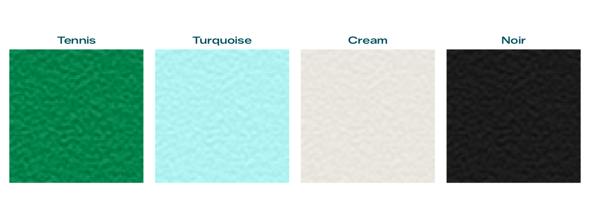
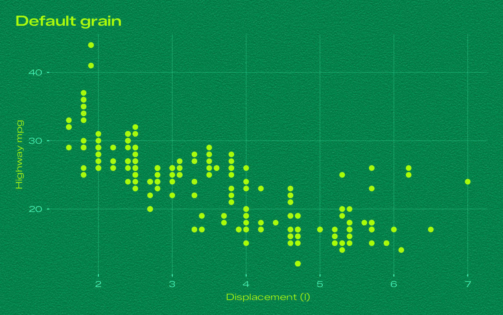
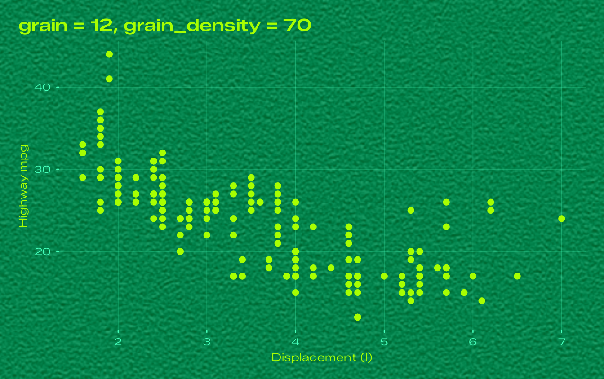
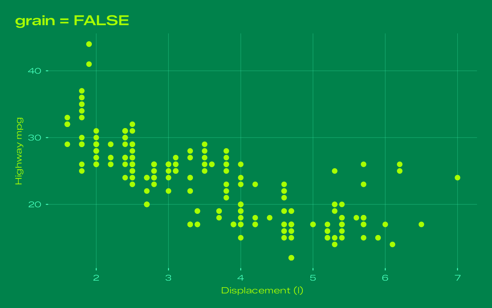
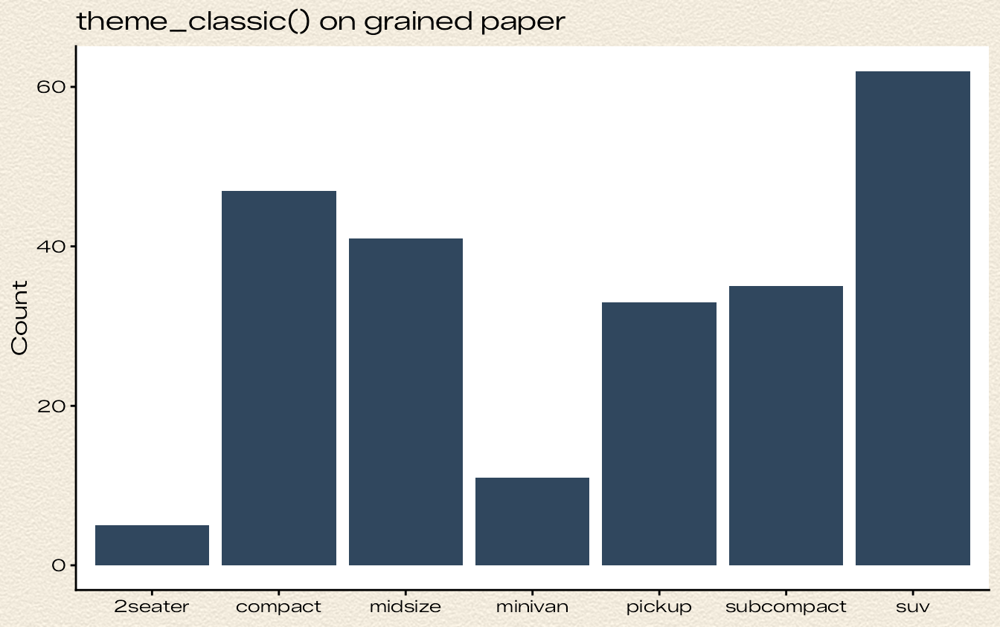
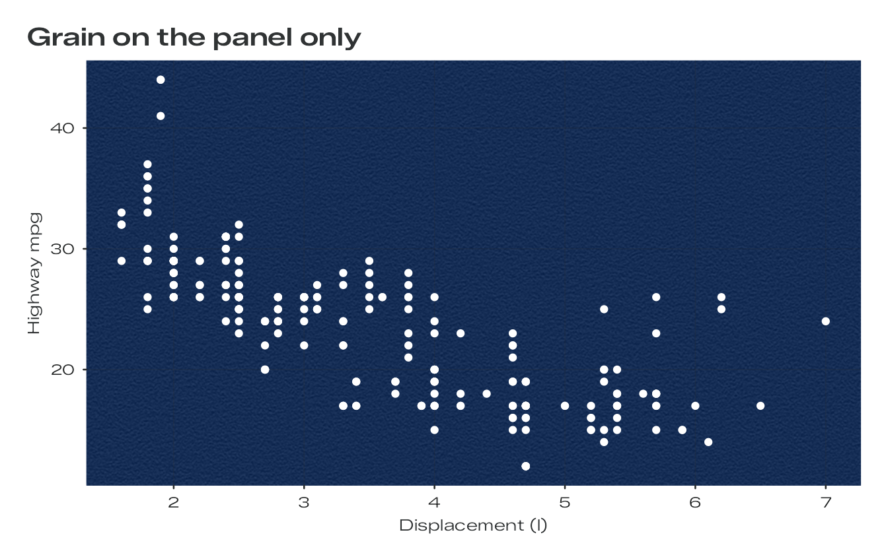
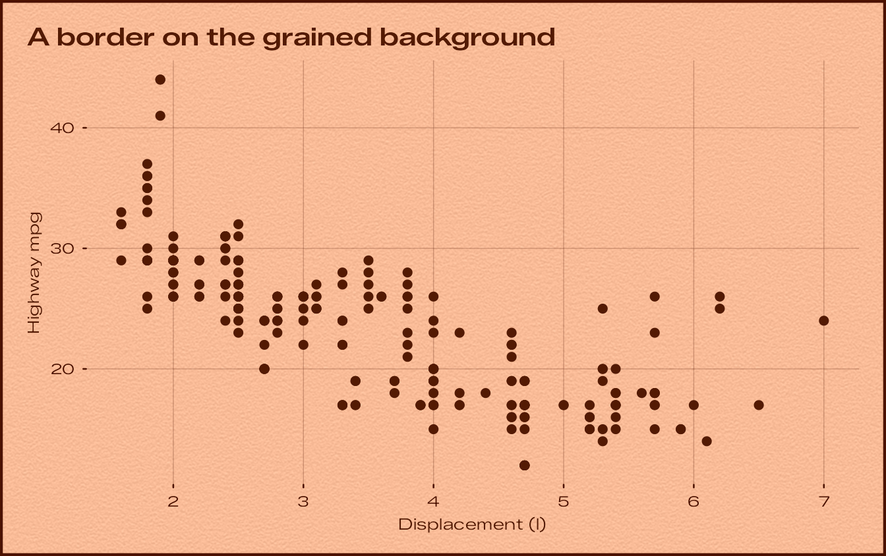

The plates of the Bauhaus Clock screensaver are not flat fills. They carry a fine paper grain, which is what keeps a coloured plate from reading as a computer-drawn rectangle. bauhaus draws the same grain behind your plots.
How the grain is made
The grain is the screensaver’s own, generated the same way and from the same seed:
- Uniform white noise from a 32-bit xorshift generator fills a seamless 512 x 512 tile.
- The noise is passed through a small 7 x 5 kernel measured from the original artwork. The kernel smooths along rows and sharpens across them, so the grain is made of short horizontal streaks, two to three samples long. There is no mottling, gradient, vignette or fibre.
- The result is scaled to unit variance and its tails are softened.
- For each dial, the plate colour is lifted by 13/255 and the grain is added equally to red, green and blue, at the strength measured for that dial.
The strengths, as standard deviations in 8-bit code values:
bauhaus_dials[order(bauhaus_dials$grain), c("name", "grain")]
#> name grain
#> 1 White 0.00
#> 14 Cream 2.60
#> 2 Turquoise 3.80
#> 15 Slate 3.90
#> 16 Noir 3.90
#> 6 Signal Blue 4.00
#> 13 Sky Blue 4.30
#> 10 Pistachio 4.40
#> 12 Rose 4.40
#> 8 Yellow 4.45
#> 11 Lavender 4.70
#> 3 Glacier 4.80
#> 4 Ocean 5.30
#> 7 Salmon 5.30
#> 9 Beige 5.30
#> 5 Tennis 7.80Up close, the grain on the Tennis dial looks like this (magnified eight times):

Grain in your plots
Every Bauhaus theme puts the grain on the plot background, using
element_grain(). Panels, legends and strips are left
transparent, so the grain runs under the whole plot, as it runs under
the whole screen in the screensaver.
The grain is drawn at a fixed physical size, 150 samples per inch by default, so it looks the same on a small figure and a poster. That density matches the screensaver on a Retina laptop screen.
p <- ggplot(mpg, aes(displ, hwy)) +
geom_point(size = 2) +
labs(title = "Default grain", x = "Displacement (l)", y = "Highway mpg")
p + theme_bauhaus("tennis")
Strength and size
grain sets the strength and grain_density
the size:
p + labs(title = "grain = 12, grain_density = 70") +
theme_bauhaus("tennis", grain = 12, grain_density = 70)
p + labs(title = "grain = FALSE") +
theme_bauhaus("tennis", grain = FALSE)
Grain on any background
element_grain() is a rectangle element like
element_rect(), so it can go anywhere a rectangle can, in
any theme:
ggplot(mpg, aes(class)) +
geom_bar(fill = "#30475E") +
labs(title = "theme_classic() on grained paper", x = NULL, y = "Count") +
theme_classic(base_family = bauhaus_font_family()) +
theme(plot.background = element_grain(fill = "#F2EBDD", sigma = 6, colour = NA))
ggplot(mpg, aes(displ, hwy)) +
geom_point(colour = "white") +
labs(title = "Grain on the panel only", x = "Displacement (l)", y = "Highway mpg") +
theme_bauhaus("white") +
theme(panel.background = element_grain(fill = bauhaus_colours("ocean")[["paper"]], sigma = 5.3, colour = NA))
Adding a plain element_rect() on top keeps the grain
unless it sets a fill, so you can add a border without
losing the paper:
p + labs(title = "A border on the grained background") +
theme_bauhaus("salmon") +
theme(plot.background = element_rect(colour = bauhaus_colours("salmon")[["track"]], linewidth = 1.5))
Files and devices
The grain is a raster image drawn when the plot is rendered, so it works on every graphics device. In PNG, JPEG and TIFF files it costs very little. In PDF and SVG files the raster makes the file larger; to draw flat backgrounds everywhere, turn the grain off for the session:
options(bauhaus.grain = FALSE)Very large outputs are capped at 25 million grain samples (set
options(bauhaus.grain_max_samples = ...) to change this);
above that the samples grow a little.